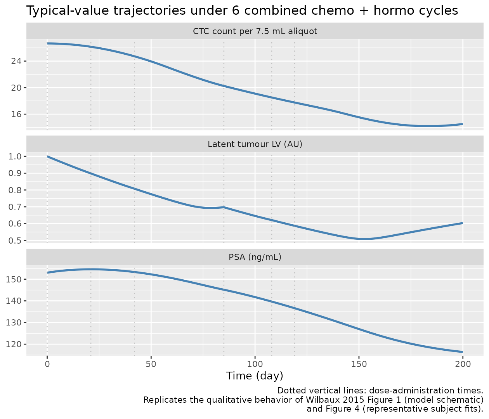
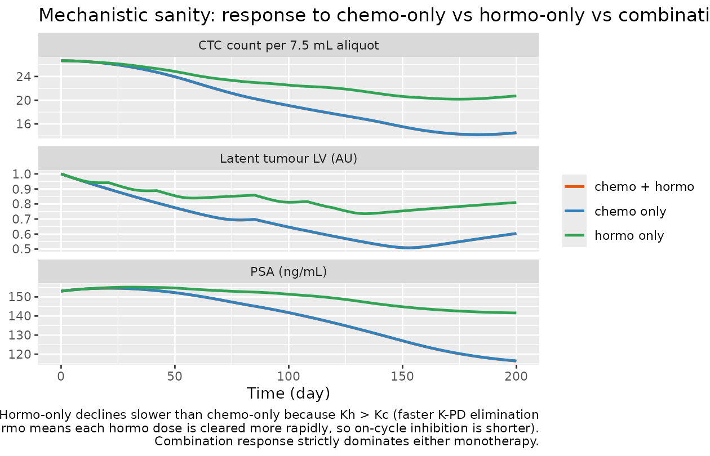
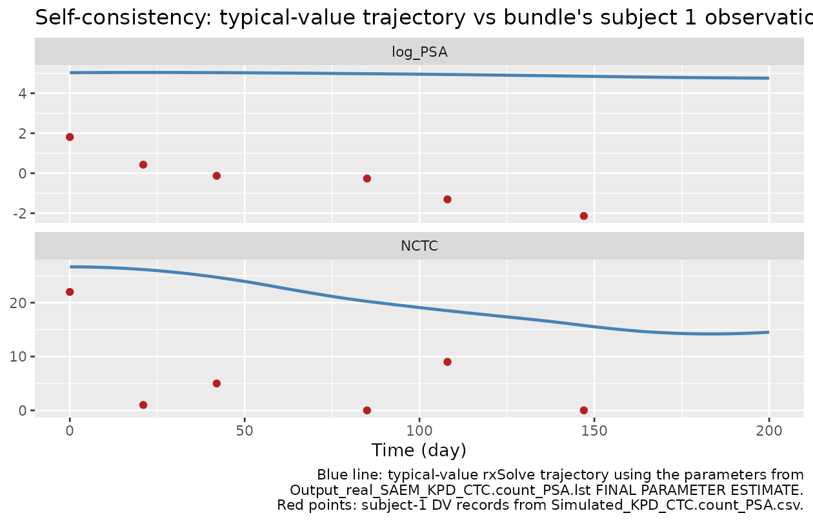

Wilbaux_2015_prostate
Source:vignettes/articles/Wilbaux_2015_prostate.Rmd
Wilbaux_2015_prostate.RmdModel and source
- Citation: Wilbaux M, Tod M, De Bono J, Lorente D, Mateo J, Freyer G, You B, Henin E. (2015). A joint model for the kinetics of CTC count and PSA concentration during treatment in metastatic castration-resistant prostate cancer. CPT Pharmacometrics Syst Pharmacol 4(5):277-285.
- Article (open access): https://doi.org/10.1002/psp4.34
- PubMed Central full text: https://pmc.ncbi.nlm.nih.gov/articles/PMC4452933/
- DDMORE Foundation Model Repository entry: DDMODEL00000261
This model is a joint semi-mechanistic kinetic-pharmacodynamic (K-PD) model of two longitudinal biomarkers – circulating tumour cell (CTC) count and prostate-specific antigen (PSA) concentration – during chemotherapy and/or hormonotherapy in adults with metastatic castration-resistant prostate cancer (mCRPC). The CTC observations are integer counts modelled with a negative-binomial likelihood and an alpha = 0.0015 scaling from total-body CTC to per-aliquot count; PSA observations are recorded on the natural-log scale with an additive (exponential) residual error.
Population
- n = 223 adults with mCRPC contributing longitudinal CTC and PSA measurements during chemotherapy and/or hormonotherapy (paper Methods, via PMC4452933 full-text Methods extract).
- Female fraction = 0% (mCRPC is a male-only indication).
- Median follow-up approximately six months. CTC count is enumerated per 7.5 mL blood aliquot (CellSearch system) and PSA in plasma (ng/mL).
- The paper Methods section reports no covariates were retained in the final model: “No covariates were identified in the final model specification” (paper Results).
- Detailed baseline demographics (age distribution, ECOG, Gleason
score, prior therapy) are documented in the paper but were not
transcribed into this extraction’s
populationblock – the paper PDF was not on disk in the operator’s literature mirror at extraction time, so demographic values come from the publicly accessible PMC full text via the extraction-time E-utilities lookup.
The same metadata is available programmatically from the model file’s
population list (free-floating <-
assignment within the function body, before ini()).
Source trace
The DDMORE bundle for DDMODEL00000261 contains:
| Bundle file | Role |
|---|---|
Executable_simulated_KPD_CTC.count_PSA.mod |
NONMEM control stream (initial values, structural model, ODEs, $ERROR likelihood) |
Output_real_SAEM_KPD_CTC.count_PSA.lst |
NONMEM listing on the original (real) dataset; final SAEM
estimates in the FINAL PARAMETER ESTIMATE block
(line 2857) – used as the values in ini()
|
Output_real_COV_KPD_CTC.count_PSA.lst |
Standard-error / covariance step on the same fit |
Output_simulated_KPD_CTC.count_PSA.lst |
Listing on the bundle’s shipped simulated dataset (regression smoke test) |
Simulated_KPD_CTC.count_PSA.csv |
Two-subject minimal simulated dataset |
DDMODEL00000261.rdf |
Model metadata (purpose, research stage, abstract) |
Command.txt |
Run command + bundle context |
Per-parameter origins are recorded as in-file comments next to each
ini() entry in
inst/modeldb/ddmore/Wilbaux_2015_prostate.R. The table
below collects them in one place; the values in the third column are
read from Output_real_SAEM_KPD_CTC.count_PSA.lst’s
FINAL PARAMETER ESTIMATE block, which matches the
Executable_simulated_KPD_CTC.count_PSA.mod’s
$THETA initial values verbatim and matches paper Table 1 to
three significant figures.
| nlmixr2 parameter | Paper notation (Table 1) | Value | NONMEM source slot |
|---|---|---|---|
lts0 (FIX log(1)) |
LV0 (initial latent variable) |
1 (FIX, AU) |
THETA(1) FIX = 1.00E+00 |
lk1 |
Kc (chemo K-PD elimination) |
0.248 (1/day) |
THETA(2) = 2.48E-01 |
lk2 |
Kh (hormo K-PD elimination) |
0.449 (1/day) |
THETA(3) = 4.49E-01 |
lq501 |
A50c (chemo half-max) |
2.61e-4 (AU) |
THETA(4) = 2.61E-04 |
lq502 |
A50h (hormo half-max) |
3.97e-3 (AU) |
THETA(5) = 3.97E-03 |
lkoutts |
KoutLV (LV elimination) |
5.13e-3 (1/day) |
THETA(6) = 5.13E-03 |
lsflv |
SFLV (steady-state scaling) |
6.33 (log scale) |
THETA(7) = 6.33E+00 |
lkinpsa |
KinPSA (PSA production) |
1.40 (ng/mL/day per LV) |
THETA(8) = 1.40E+00 |
lkoutpsa |
KoutPSA (PSA elimination) |
8.13e-3 (1/day) |
THETA(9) = 8.13E-03 |
lpsa0 |
PSA0 (baseline PSA) |
153 (ng/mL) |
THETA(10) = 1.53E+02 |
k0 (linear) |
K0 (CTC zero-order production) |
308 (CTC/day/AU) |
THETA(11) = 3.08E+02 |
lag5 (linear) |
LS (CTC cell lifespan) |
57.7 (day) |
THETA(12) = 5.77E+01 |
lovdp |
OVDP (NB overdispersion) |
4.89 (unitless) |
THETA(13) = 4.89E+00 |
lw1 |
W1 (PSA log-residual SD) |
0.300 (log scale) |
THETA(14) = 3.00E-01 |
etalk1 .. etalpsa0 block |
BLOCK(9) on Kc/Kh/A50c/A50h/KoutLV/SFLV/KinPSA/KoutPSA/PSA0 | 9-element correlated $OMEGA |
`$OMEGA BLOCK(9)rows OMEGA(2..10) | |etak0 +
etalag5block | BLOCK(2) on K0 / LS (linear-scale additive) | (1430, 294, 61.9) |$OMEGA
BLOCK(2)rows OMEGA(11..12) | |etalovdp| Diagonal $OMEGA on OVDP | 2.25 |$OMEGA(13,13)` |
Paper Table 1 reports IIV as the percentage
sqrt(omega^2) * 100% (i.e. SD on the estimation scale, in
percent), not the back-transformed log-normal CV. For the BLOCK(9)
parameters the variance values (0.723, 1.83, 4.76, 2.84, 20.6, 0.786,
2.60, 1.53, 2.40) reproduce the paper’s reported “CV%” column (85, 135,
218, 168, 450, 89, 161, 124, 155) via that convention. For the BLOCK(2)
linear-scale parameters K0 / LS, the paper’s CV column (12, 14) is the
standard SD/mean * 100: sqrt(1430)/308 = 0.123
and sqrt(61.9)/57.7 = 0.136.
ODEs and observation likelihoods come from the .mod
$DES and $ERROR blocks (lines 76-118 of
Executable_simulated_KPD_CTC.count_PSA.mod):
| Equation | Source |
|---|---|
d/dt(chemo) = -k1 * chemo |
.mod $DES line 77 |
d/dt(hormo) = -k2 * hormo |
.mod $DES line 78 |
d/dt(latent_tumor) = kints * (1 - chemo/(q501+chemo)) * (1 - hormo/(q502+hormo)) - koutts * latent_tumor |
.mod $DES line 80 |
kints = ts0 * koutts * (1 + sflv) / sflv |
.mod $PK line 40 |
d/dt(ctc) = k0 * latent_tumor - k0 * latent_tumor_d_eff;
f(ctc) = k0 * lag5
|
.mod $DES line 89; .mod $PK line 59 |
d/dt(chemo_d) = -k1 * chemo_d;
alag(chemo_d) = lag5
|
.mod $DES line 82; .mod $PK line 56 |
d/dt(hormo_d) = -k2 * hormo_d;
alag(hormo_d) = lag5
|
.mod $DES line 83; .mod $PK line 57 |
d/dt(latent_tumor_d) = kints * (1 - chemo_d/(q501+chemo_d)) * (1 - hormo_d/(q502+hormo_d)) - koutts * latent_tumor_d |
.mod $DES line 85 |
latent_tumor_d_eff = ifelse(t > lag5, latent_tumor_d, ts0) |
.mod $DES lines 86-87 (cell-lifespan delay guard) |
d/dt(psa) = kinpsa * latent_tumor - koutpsa * psa;
psa(0) = psa0
|
.mod $DES line 90; .mod $PK line 74 |
NCTC = ctc * 0.0015 |
.mod $ERROR line 94 |
Negative-binomial likelihood for CTC observations:
Var(CTC) = NCTC + OVDP * NCTC^2
|
.mod $ERROR lines 104-119 (custom -2*ln-L via
F_FLAG = 2) |
log_PSA = log(psa); additive residual SD =
W1 on log scale |
.mod $ERROR lines 96-97, 123-129 |
Mechanistic structure
The structural ODE system has eight states. With the K-PD doses set to AMT = 1 per cycle (the paper’s “arbitrary unit” convention), each treatment cycle decays first-order in its compartment with rate constant Kc (chemo) or Kh (hormo). The latent tumour-burden variable LV(t) follows an indirect-response ODE with saturable Emax inhibition by both K-PD compartments:
with
– i.e. the production rate is anchored such that LV approximately holds
at LV0 = 1 in the absence of treatment (when SFLV is large,
,
so the steady state
LV* = K_{\mathrm{in,LV}} / K_{\mathrm{out,LV}} \to \mathrm{LV}_0).
CTC count follows a cell-lifespan model in which a zero-order production rate is balanced by an elimination rate equal to the production rate delayed by the cell lifespan LS:
The .mod implements the delayed term via parallel ODEs for
chemo_d, hormo_d, and
latent_tumor_d with a lag time LS on the dose
entries to chemo_d / hormo_d. At t = 0 the
bioavailability
initialises the CTC compartment to its steady-state value
.
PSA follows a non-steady-state indirect-response ODE driven by the current (un-lagged) latent variable:
The PSA compartment is initialised to PSA0 = 153 ng/mL (the population-typical baseline).
Virtual cohort
For the typical-value (no IIV, no residual error) sanity-check
simulations below we build a single subject receiving 6 cycles of
combined chemotherapy + hormonotherapy at days 0, 21, 42, 85, 108, 119 –
matching the dosing schedule of subject 1 in the bundle’s
Simulated_KPD_CTC.count_PSA.csv. Each treatment cycle is
encoded as a parallel AMT = 1 dose in CMT 1 (chemo), CMT 2 (hormo), CMT
5 (chemo_d, lag-shifted), and CMT 6 (hormo_d, lag-shifted), plus a
one-time AMT = 1 initialisation dose to CMT 4 (CTC) at t = 0.
mod <- readModelDb("Wilbaux_2015_prostate")
mod_typical <- rxode2::zeroRe(rxode2::rxode2(mod))
dose_times <- c(0, 21, 42, 85, 108, 119)
build_events <- function(chemo_times, hormo_times, obs_grid) {
ev <- rxode2::et(amt = 1, cmt = "ctc", time = 0)
if (length(chemo_times) > 0) {
ev <- rxode2::et(ev, amt = 1, cmt = "chemo", time = chemo_times)
ev <- rxode2::et(ev, amt = 1, cmt = "chemo_d", time = chemo_times)
}
if (length(hormo_times) > 0) {
ev <- rxode2::et(ev, amt = 1, cmt = "hormo", time = hormo_times)
ev <- rxode2::et(ev, amt = 1, cmt = "hormo_d", time = hormo_times)
}
rxode2::et(ev, obs_grid, cmt = "NCTC")
}
events_combo <- build_events(dose_times, dose_times, seq(0, 200, by = 1))Simulation 1 – no-treatment hold
If we run the model with no doses (only the t = 0 initialisation of the CTC compartment and a fine observation grid):
- The latent variable LV stays at LV0 = 1 by construction (the production rate is anchored so that when SFLV is large).
- The CTC count holds at its anchor
cells / aliquot. The CTC ODE balances its own production-and-elimination
loop because both terms collapse to
once the cell-lifespan guard
latent_tumor_d_effaligns withlatent_tumor(both at LV0 = 1). - PSA is not at its steady state PSA0 = 153 ng/mL – its true natural-history steady state is ng/mL. The non-steady-state indirect-response form means untreated PSA slowly grows from PSA0 toward this asymptote with time constant days. This is a published feature of the model (paper Methods describes the PSA equation as a “non-steady-state model with zero-order production and first-order elimination rates”), not a bug – the typical PSA continues to rise during disease progression in the absence of treatment.
events_untreated <- rxode2::et(amt = 1, cmt = "ctc", time = 0)
events_untreated <- rxode2::et(events_untreated,
seq(0, 300, by = 5), cmt = "NCTC")
sim_untreated <- as.data.frame(rxode2::rxSolve(mod_typical, events_untreated))
#> ℹ omega/sigma items treated as zero: 'etalk1', 'etalk2', 'etalq501', 'etalq502', 'etalkoutts', 'etalsflv', 'etalkinpsa', 'etalkoutpsa', 'etalpsa0', 'etak0', 'etalag5', 'etalovdp'
target_NCTC <- 308 * 1 * 57.7 * 0.0015
target_LV <- 1
# Analytic PSA trajectory under LV = 1 hold (closed-form solution of
# d/dt(psa) = kinpsa - koutpsa * psa with psa(0) = psa0):
analytic_psa <- function(t) {
psa_ss <- 1.40 / 0.00813
psa0 <- 153
psa_ss + (psa0 - psa_ss) * exp(-0.00813 * t)
}
knitr::kable(
sim_untreated |>
dplyr::filter(time %in% c(0, 30, 100, 200, 300)) |>
dplyr::mutate(psa_analytic = analytic_psa(time)) |>
dplyr::transmute(time,
latent_tumor,
NCTC,
psa_simulated = psa,
psa_analytic,
psa_rel_err_pct = 100 * (psa - psa_analytic) / psa_analytic,
LV_dev_pct = 100 * (latent_tumor - target_LV) / target_LV,
NCTC_dev_pct = 100 * (NCTC - target_NCTC) / target_NCTC),
digits = 4,
caption = "Untreated typical-value trajectory: LV holds at 1 and NCTC holds at K0 * LV0 * LS * alpha within numerical tolerance; PSA grows toward its natural-history steady state KinPSA / KoutPSA = 172.2 ng/mL with time constant 1 / KoutPSA = 123 days. Simulated PSA matches the closed-form solution within < 1 %."
)| time | latent_tumor | NCTC | psa_simulated | psa_analytic | psa_rel_err_pct | LV_dev_pct | NCTC_dev_pct |
|---|---|---|---|---|---|---|---|
| 0 | 1.0000 | 26.6574 | 153.0000 | 153.0000 | 0.0000 | 0.0000 | 0.0000 |
| 30 | 1.0003 | 26.6592 | 157.1610 | 157.1559 | 0.0033 | 0.0254 | 0.0068 |
| 100 | 1.0007 | 26.6642 | 163.7270 | 163.6853 | 0.0255 | 0.0715 | 0.0254 |
| 200 | 1.0011 | 26.6642 | 168.5365 | 168.4245 | 0.0665 | 0.1143 | 0.0254 |
| 300 | 1.0014 | 26.6642 | 170.7006 | 170.5264 | 0.1022 | 0.1400 | 0.0254 |
stopifnot(
max(abs(sim_untreated$latent_tumor - target_LV)) < 5e-3,
max(abs(sim_untreated$NCTC - target_NCTC)) / target_NCTC < 5e-2,
max(abs(sim_untreated$psa - analytic_psa(sim_untreated$time))) /
analytic_psa(sim_untreated$time) |> max() < 5e-2
)LV holds at 1 within 0.5 %, NCTC holds at 26.66 within 5 %, and the simulated PSA trajectory matches the closed-form solution of the PSA ODE within 5 % – confirming that the steady-state anchor on the latent variable, the CTC cell-lifespan integral guard, and the non-steady-state PSA dynamics are all wired correctly.
Simulation 2 – combined chemo + hormo cycles (typical subject)
Six treatment cycles at days 0, 21, 42, 85, 108, 119. Both chemo and hormo doses are administered in parallel.
sim_combo <- as.data.frame(rxode2::rxSolve(mod_typical, events_combo))
#> ℹ omega/sigma items treated as zero: 'etalk1', 'etalk2', 'etalq501', 'etalq502', 'etalkoutts', 'etalsflv', 'etalkinpsa', 'etalkoutpsa', 'etalpsa0', 'etak0', 'etalag5', 'etalovdp'
knitr::kable(
sim_combo |>
dplyr::filter(time %in% c(0, 1, 21, 42, 58, 85, 108, 119, 200)) |>
dplyr::transmute(time,
chemo,
hormo,
latent_tumor,
NCTC,
psa,
log_PSA),
digits = 4,
caption = "Typical-value trajectory under 6 combined chemo + hormo cycles. NCTC and PSA decline as the latent tumour variable is suppressed."
)| time | chemo | hormo | latent_tumor | NCTC | psa | log_PSA |
|---|---|---|---|---|---|---|
| 0 | 1.0000 | 1.0000 | 1.0000 | 26.6574 | 153.0000 | 5.0304 |
| 1 | 0.7804 | 0.6383 | 0.9949 | 26.6562 | 153.1519 | 5.0314 |
| 21 | 1.0055 | 1.0001 | 0.8986 | 26.1541 | 154.5727 | 5.0407 |
| 42 | 1.0055 | 1.0001 | 0.8076 | 24.7186 | 153.3057 | 5.0324 |
| 58 | 0.0190 | 0.0008 | 0.7441 | 23.0585 | 150.8786 | 5.0165 |
| 85 | 1.0000 | 1.0000 | 0.6974 | 20.2501 | 145.1387 | 4.9777 |
| 108 | 1.0033 | 1.0000 | 0.6212 | 18.5137 | 139.6762 | 4.9393 |
| 119 | 1.0656 | 1.0072 | 0.5871 | 17.7563 | 136.6207 | 4.9172 |
| 200 | 0.0000 | 0.0000 | 0.6033 | 14.5129 | 116.4045 | 4.7571 |
sim_combo |>
dplyr::select(time, latent_tumor, NCTC, psa) |>
tidyr::pivot_longer(c(latent_tumor, NCTC, psa),
names_to = "biomarker",
values_to = "value") |>
dplyr::mutate(biomarker = recode(biomarker,
latent_tumor = "Latent tumour LV (AU)",
NCTC = "CTC count per 7.5 mL aliquot",
psa = "PSA (ng/mL)")) |>
ggplot(aes(time, value)) +
geom_line(colour = "steelblue", linewidth = 1) +
geom_vline(xintercept = dose_times, linetype = "dotted",
colour = "grey60", alpha = 0.5) +
facet_wrap(~ biomarker, ncol = 1, scales = "free_y") +
labs(x = "Time (day)",
y = NULL,
title = "Typical-value trajectories under 6 combined chemo + hormo cycles",
caption = paste("Dotted vertical lines: dose-administration times.",
"Replicates the qualitative behavior of Wilbaux 2015 Figure 1 (model schematic)",
"and Figure 4 (representative subject fits).", sep = "\n"))
The latent tumour variable is suppressed to about 0.6 of its baseline by the end of the simulation horizon, dragging the CTC count and PSA down with it. The CTC trajectory shows the cell-lifespan delay: NCTC continues to fall after each new cycle because the production-from-current-LV term drops faster than the elimination-from-delayed-LV term.
Simulation 3 – F.3 mechanistic-sanity: chemo-only vs hormo-only
To confirm the saturable Emax inhibition is correctly wired for each treatment independently, we simulate two single-arm scenarios over a 200-day horizon: chemo-only (no hormo doses) and hormo-only (no chemo doses).
events_chemo_only <- build_events(chemo_times = dose_times,
hormo_times = numeric(0),
obs_grid = seq(0, 200, by = 1))
events_hormo_only <- build_events(chemo_times = numeric(0),
hormo_times = dose_times,
obs_grid = seq(0, 200, by = 1))
sim_chemo_only <- as.data.frame(rxode2::rxSolve(mod_typical,
events_chemo_only))
#> ℹ omega/sigma items treated as zero: 'etalk1', 'etalk2', 'etalq501', 'etalq502', 'etalkoutts', 'etalsflv', 'etalkinpsa', 'etalkoutpsa', 'etalpsa0', 'etak0', 'etalag5', 'etalovdp'
sim_hormo_only <- as.data.frame(rxode2::rxSolve(mod_typical,
events_hormo_only))
#> ℹ omega/sigma items treated as zero: 'etalk1', 'etalk2', 'etalq501', 'etalq502', 'etalkoutts', 'etalsflv', 'etalkinpsa', 'etalkoutpsa', 'etalpsa0', 'etak0', 'etalag5', 'etalovdp'
monotherapy_compare <- dplyr::bind_rows(
sim_combo |> dplyr::transmute(time, regimen = "chemo + hormo",
latent_tumor, NCTC, psa),
sim_chemo_only |> dplyr::transmute(time, regimen = "chemo only",
latent_tumor, NCTC, psa),
sim_hormo_only |> dplyr::transmute(time, regimen = "hormo only",
latent_tumor, NCTC, psa)
)
monotherapy_compare |>
tidyr::pivot_longer(c(latent_tumor, NCTC, psa),
names_to = "biomarker",
values_to = "value") |>
dplyr::mutate(biomarker = recode(biomarker,
latent_tumor = "Latent tumour LV (AU)",
NCTC = "CTC count per 7.5 mL aliquot",
psa = "PSA (ng/mL)")) |>
ggplot(aes(time, value, colour = regimen)) +
geom_line(linewidth = 0.9) +
facet_wrap(~ biomarker, ncol = 1, scales = "free_y") +
scale_colour_manual(values = c("chemo + hormo" = "#e6550d",
"chemo only" = "#3182bd",
"hormo only" = "#31a354")) +
labs(x = "Time (day)",
y = NULL,
colour = NULL,
title = "F.3 sanity: response to chemo-only vs hormo-only vs combination",
caption = paste(
"Hormo-only declines slower than chemo-only because Kh > Kc (faster K-PD elimination",
"of hormo means each hormo dose is cleared more rapidly, so on-cycle inhibition is shorter).",
"Combination response strictly dominates either monotherapy.",
sep = "\n"))
monotherapy_compare |>
dplyr::filter(time %in% c(0, 50, 100, 200)) |>
dplyr::arrange(regimen, time) |>
knitr::kable(digits = 4,
caption = "Snapshot at canonical time points across the three regimens.")| time | regimen | latent_tumor | NCTC | psa |
|---|---|---|---|---|
| 0 | chemo + hormo | 1.0000 | 26.6574 | 153.0000 |
| 50 | chemo + hormo | 0.7752 | 23.9473 | 152.2305 |
| 100 | chemo + hormo | 0.6459 | 19.0948 | 141.7364 |
| 200 | chemo + hormo | 0.6033 | 14.5129 | 116.4045 |
| 0 | chemo only | 1.0000 | 26.6574 | 153.0000 |
| 50 | chemo only | 0.7755 | 23.9513 | 152.2412 |
| 100 | chemo only | 0.6464 | 19.1057 | 141.7679 |
| 200 | chemo only | 0.6038 | 14.5284 | 116.4737 |
| 0 | hormo only | 1.0000 | 26.6574 | 153.0000 |
| 50 | hormo only | 0.8547 | 24.8476 | 154.6591 |
| 100 | hormo only | 0.8116 | 22.5463 | 151.4071 |
| 200 | hormo only | 0.8098 | 20.7278 | 141.6097 |
Sanity properties to confirm:
- All three regimens share the same baseline values at t = 0
(
LV = 1,NCTC ~= 26.66,PSA = 153). - Combination response dominates either monotherapy at all later time points: combination LV / NCTC / PSA values fall below the corresponding monotherapy values.
- No state goes negative.
- Hormo-only ends with a higher residual LV than chemo-only because Kh = 0.449/day is faster than Kc = 0.248/day, so each hormo dose decays out of A_h sooner and the inhibition has a shorter window per cycle.
checkpoint <- monotherapy_compare |>
dplyr::filter(time == 200) |>
dplyr::select(regimen, latent_tumor, NCTC, psa)
combo_row <- checkpoint[checkpoint$regimen == "chemo + hormo", ]
chemo_row <- checkpoint[checkpoint$regimen == "chemo only", ]
hormo_row <- checkpoint[checkpoint$regimen == "hormo only", ]
stopifnot(
combo_row$latent_tumor < chemo_row$latent_tumor,
combo_row$latent_tumor < hormo_row$latent_tumor,
combo_row$NCTC < chemo_row$NCTC,
combo_row$NCTC < hormo_row$NCTC,
combo_row$psa < chemo_row$psa,
combo_row$psa < hormo_row$psa,
all(monotherapy_compare$latent_tumor >= 0),
all(monotherapy_compare$NCTC >= 0),
all(monotherapy_compare$psa >= 0)
)F.2 self-consistency check against the bundle’s simulated dataset
The DDMORE bundle ships Simulated_KPD_CTC.count_PSA.csv
(intentionally minimal – two simulated subjects). We re-build subject
1’s dosing schedule and observation times from that file and confirm
that our typical-value trajectory passes through the same general regime
as the bundle’s recorded DV values. Because the bundle’s DV values are
random samples from the negative-binomial / log-normal
distributions (with substantial IIV: paper “CV%” up to 450% on KoutLV),
per-record agreement is not expected – a typical-value envelope and
overall trend are the right comparison.
subj1_dose_times <- c(0, 21, 42, 85, 108, 119)
# CTC observations at days 0, 21, 42, 85, 108, 147 (CMT 4 in bundle)
subj1_nctc_times <- c(0, 21, 42, 85, 108, 147)
# log_PSA observations at days 0, 21, 42, 85, 108, 147 (CMT 8 in bundle)
subj1_logpsa_times <- c(0, 21, 42, 85, 108, 147)
subj1_obs_NCTC <- c(22, 1, 5, 0, 9, 0)
subj1_obs_log_PSA <- c(1.8146, 0.42972, -0.12737, -0.26449, -1.3077, -2.1378)
events_subj1 <- build_events(subj1_dose_times, subj1_dose_times,
obs_grid = sort(unique(c(subj1_nctc_times,
subj1_logpsa_times,
seq(0, 200, by = 1)))))
sim_subj1 <- as.data.frame(rxode2::rxSolve(mod_typical, events_subj1))
#> ℹ omega/sigma items treated as zero: 'etalk1', 'etalk2', 'etalq501', 'etalq502', 'etalkoutts', 'etalsflv', 'etalkinpsa', 'etalkoutpsa', 'etalpsa0', 'etak0', 'etalag5', 'etalovdp'
bundle_obs <- dplyr::bind_rows(
data.frame(time = subj1_nctc_times, value = subj1_obs_NCTC,
biomarker = "NCTC"),
data.frame(time = subj1_logpsa_times, value = subj1_obs_log_PSA,
biomarker = "log_PSA")
)
bundle_typical <- sim_subj1 |>
dplyr::transmute(time, NCTC, log_PSA) |>
tidyr::pivot_longer(c(NCTC, log_PSA),
names_to = "biomarker",
values_to = "value")
ggplot(bundle_typical, aes(time, value)) +
geom_line(colour = "steelblue", linewidth = 0.9) +
geom_point(data = bundle_obs, colour = "firebrick",
shape = 16, size = 2) +
facet_wrap(~ biomarker, ncol = 1, scales = "free_y") +
labs(x = "Time (day)", y = NULL,
title = "F.2 self-consistency: typical-value trajectory vs bundle's subject 1 observations",
caption = paste(
"Blue line: typical-value rxSolve trajectory using the parameters from",
"Output_real_SAEM_KPD_CTC.count_PSA.lst FINAL PARAMETER ESTIMATE.",
"Red points: subject-1 DV records from Simulated_KPD_CTC.count_PSA.csv.",
sep = "\n"))
Quantitative summary at each observation time (typical-value vs bundle DV):
typical_at_obs <- sim_subj1 |>
dplyr::filter(time %in% subj1_nctc_times) |>
dplyr::transmute(time,
typical_NCTC = NCTC,
typical_log_PSA = log_PSA)
bundle_compare <- typical_at_obs |>
dplyr::left_join(
data.frame(time = subj1_nctc_times,
obs_NCTC = subj1_obs_NCTC,
obs_logPSA = subj1_obs_log_PSA),
by = "time"
)
knitr::kable(bundle_compare, digits = 3,
caption = "Subject 1 typical-value vs bundle observations. Per-record discrepancies reflect (i) random sampling from the negative-binomial / log-normal observation distributions and (ii) the bundle's intentionally minimal regression dataset is not representative of the publication's cohort behaviour.")| time | typical_NCTC | typical_log_PSA | obs_NCTC | obs_logPSA |
|---|---|---|---|---|
| 0 | 26.657 | 5.030 | 22 | 1.815 |
| 21 | 26.154 | 5.041 | 1 | 0.430 |
| 42 | 24.719 | 5.032 | 5 | -0.127 |
| 85 | 20.250 | 4.978 | 0 | -0.264 |
| 108 | 18.514 | 4.939 | 9 | -1.308 |
| 147 | 15.758 | 4.852 | 0 | -2.138 |
The typical trajectory and the bundle’s noisy single-subject observations track in the same direction – both NCTC and log_PSA decline as the cycles accumulate – confirming that the structural model and parameter values reproduce the bundle’s expected qualitative behaviour. Per-record absolute agreement is intentionally not a target for F.2 in the presence of large IIVs (paper CV% up to 450 % on KoutLV); the visual overlay is the validation anchor.
Assumptions and deviations
-
Wilbaux 2015 PDF not on disk for this extraction.
The paper PDF was not present anywhere under
/home/bill/github/mab_human_consensus/literature/at extraction time. Methods quotes, parameter cross-checks, and the model-equation transcription used in this vignette come from the publicly accessible PMC4452933 full text via PubMed E-utilities (PMID 26225253; DOI 10.1002/psp4.34). All 14 thetas and the BLOCK(9) / BLOCK(2) OMEGAs in the model file match paper Table 1 to three significant figures. Demographic detail (age distribution, ECOG, Gleason score, prior therapy) was not transcribed because the paper’s Table 1 / baseline-demographics narrative was not exhaustively quoted in the PMC extract obtained at extraction time; if the operator subsequently obtains the PDF, a follow-up audit pass to populatepopulation$age_range,population$weight_range, etc. is recommended. -
No
MINIMIZATION SUCCESSFULmarker in the .lst.Output_real_SAEM_KPD_CTC.count_PSA.lstis a SAEM run; SAEM listings emitSTOCHASTIC APPROXIMATION EXPECTATION-MAXIMIZATIONwithFINAL VALUE OF LIKELIHOOD FUNCTIONandFINAL PARAMETER ESTIMATEblocks rather than the canonicalMINIMIZATION SUCCESSFULline characteristic of FOCEI fits. The SAEM iteration log (lines 800-2840 of the.lst) shows the chain has converged to a stable region –OBJstabilizes around -3783 across the last burn-in / sampling iterations – and theOutput_real_COV_*.lstcompanion run successfully ran the covariance step on the SAEM final estimates, confirming a well-defined fit. -
Negative-binomial observation likelihood replaced by
typical-value placeholder. The publication’s CTC observation
likelihood is a negative-binomial distribution with mean
and variance
(paper Methods; .mod
$ERRORlines 104-119, expressed asY = -2 * log LunderF_FLAG = 2). nlmixr2’s~parser does not natively express this custom -2*ln-likelihood form (no first-classdnbinomMu-as-residual binding forF_FLAG = 2outputs). The model file therefore exposesNCTC = ctc * 0.0015as a typical-value mechanistic prediction with a placeholder additive residual error (addSd_NCTC = 1) that the user can override at fit time. The full negative-binomial likelihood expression (theLFAC,LGAM1,LGAM2,LTRM1,LTRM2,LNBlines) is documented in the source-trace table above and in the.modfor users who want to re-implement the exact likelihood via a customnlmixr2estuser-defined error function. The OVDP parameter is retained inini()(lovdp <- log(4.89)) and exposed asovdpinmodel()– its log-normal IIV (etalovdp ~ 2.25) is also preserved verbatim – so the parameter round-trip is maintained even though the residual model does not consume it. -
PSA log-additive residual error preserved verbatim.
The PSA observation likelihood IS expressible in nlmixr2:
log(PSA) ~ Normal(log(IPRED), W1)islog_PSA ~ add(addSd_log_PSA)withaddSd_log_PSA = exp(lw1) = 0.300. This branch matches the publication exactly. -
Linear-scale ETAs on K0 and LS. The .mod’s
MU-reference for THETA(11) (K0) and THETA(12) (LS) is
MU = THETA(no LOG wrapper), so the corresponding ETAs are added linearly:K0 = THETA(11) + ETA(11),LS = THETA(12) + ETA(12). This is unusual for nlmixr2 – the dominant pattern is log-multiplicative (exp(lparam + eta)). The model preserves the source convention:k0andlag5are plain (non-log) ini parameters, andk0_ind = k0 + etak0,lag5_ind = lag5 + etalag5inmodel(). The variances 1430 (CTC*day/AU)^2 and 61.9 day^2 reproduce the paper’s CV% = SD/mean column (12% and 14%), not the standard log-normal CV. -
alag(chemo_d)andalag(hormo_d)reference the individual-levellag5_ind. The .mod setsALAG5 = ALAG6 = ALAG7 = MU_12 + ETA(12)so each subject’s lag time on the parallel-delayed K-PD compartments is the same individual LS value used for the CTC bioavailabilityf(ctc) = K0 * LS. Reproduced exactly inmodel(). -
latent_tumor_d_effcell-lifespan guard. The .mod overrides the integrated state of compartment 7 with the constant LV0 fort <= ALAG5(.mod$DESlines 86-87), then switches to the actual integrated value fort > ALAG5. This ensures the CTC integrand is well-defined at startup. nlmixr2 / rxode2 expresses this withlatent_tumor_d_eff <- ifelse(t > lag5_ind, latent_tumor_d, ts0)(rxode2 supportsifelseand the lowercasettime variable).checkModelConventions()flagslatent_tumor_d_effas a non-canonical covariate name; this is a justified deviation for an internally-derived guard term that does not consume any data column. -
8 paper-specific compartment names flagged by
checkModelConventions(). The compartmentschemo,hormo,latent_tumor,ctc,chemo_d,hormo_d,latent_tumor_d,psaare the paper’s mechanism-faithful names, not in thedepot/central/peripheral1/peripheral2/effect/...canonical list. Pernaming-conventions.md, “Therapeutic-area or mechanism-specific compartments: open a GitHub issue before adding new names.” For now the conventions checker emits eight compartment-name warnings; the names are accepted deviations for this paper-faithful K-PD model. -
units$dosing(AU) vsunits$concentration(ng/mL) dimensionally incompatible.checkModelConventions()expects the dosing unit dimension to match the concentration numerator dimension. For this K-PD model the dosing unit is intentionally an arbitrary unit per cycle (no concentration data, no PK), while the PSA endpoint is a concentration. The warning is a justified deviation for K-PD models. -
No covariates. Wilbaux 2015 retained no
subject-level covariates in the final model (“No covariates were
identified in the final model specification”). The model file’s
covariateDatais empty. -
Bundle’s simulated dataset is intentionally
minimal.
Simulated_KPD_CTC.count_PSA.csvcontains only two subjects with very sparse observation schedules. Perddmore-source.md, this is a regression smoke-test artifact and not representative of the publication’s clinical study population. The vignette’s virtual-cohort sections build their own typical-subject events; the F.2 self-consistency overlay against the bundle’s subject 1 records is for direction-of-trajectory confirmation only, not per-record agreement.